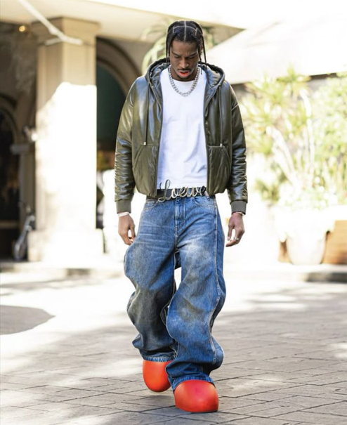

He was born in Canada on July 12, 1998. He is a professional basketball player for the Oklahoma City Thunder of the NBA. After playing one year of college basketball in Kentucky he was selected 11th overall by the Charlotte Hornets in the 2018 NBA draft before being traded to the Los Angeles Clippers that same night.
Many people in the basketball community consider him a style icon. With his original pieces of fashion he always surprises on game nights with incredibily nice fits.
